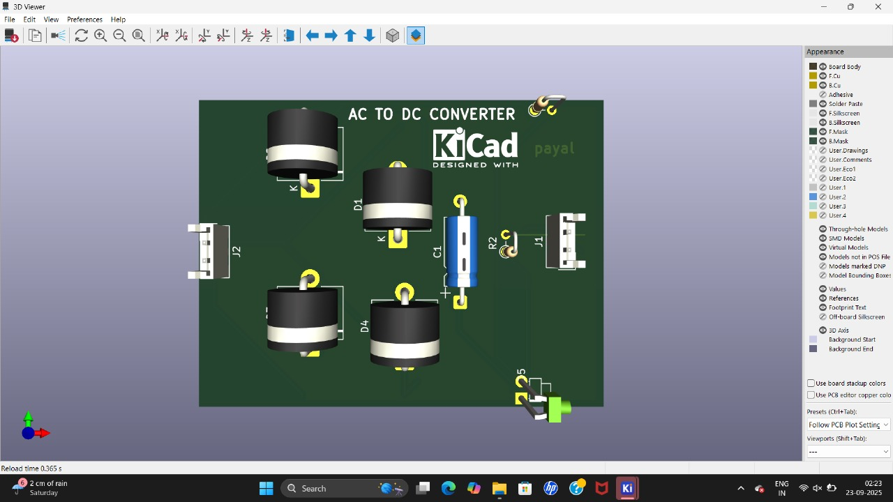
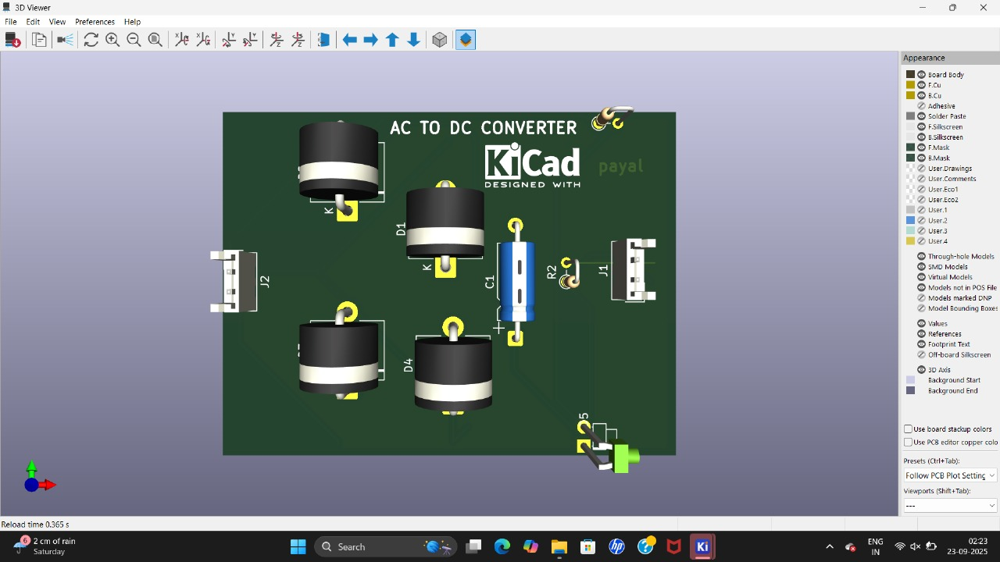

PCB AND IOT LEARNING MODULE
IOT
*IoT (Internet of Things)* is a system of interrelated physical devices that collect and exchange data through the internet. These devices—ranging from sensors and microcontrollers to smart appliances—can sense, process, and communicate information to other devices or cloud platforms. #### 🔗 How IoT Works:1. *Sensors* detect physical changes (temperature, motion, light, etc.).
2. *Microcontrollers* like ESP8266 process the data.
3. *Connectivity* (Wi-Fi, Bluetooth) sends data to the cloud.
4. *Cloud platforms* store, analyze, and visualize data.
5. *User interfaces* allow monitoring and control via apps or dashboards.
#### 🏠 Real-Life Examples:
- Smart home systems (lights, thermostats)
- Wearable health monitors
- Industrial automation
- Smart agriculture (soil moisture sensors)
PCB
In the FabLab, I learned about *Printed Circuit Boards (PCB)* and how they form the backbone of electronic devices.A PCB mechanically supports and electrically connects electronic components using conductive tracks, pads, and other features etched from copper sheets and laminated onto a non-conductive substrate.
Instead of messy wiring, PCBs provide a compact, reliable, and professional way to design circuits. ---
Day 1 – Basics oF IOT
- Introduction to ESP8266 & Setup*
#### 🔍 Topics Explored:
- IoT architecture and applications
- ESP8266 microcontroller:
- Built-in Wi-Fi
- GPIO pins
- Compact and low-power
- Comparison with Arduino Uno
#### 🛠 Activities:
- Installed Arduino IDE
- Added ESP8266 board support via Board Manager
- Connected ESP8266 to PC and verified COM port
- Ran basic LED blink test
#### ✅ Outcomes:
- Understood ESP8266’s role in IoT systems
- Successfully set up the development environment
Day 2 –
- Arduino Programming & Code Uploading*
#### 🧠 Concepts Learne
- Arduino sketch structure:
cpp
void setup() {
pinMode(LED_BUILTIN, OUTPUT);
}
void loop() {
digitalWrite(LED_BUILTIN, HIGH);
delay(1000);
digitalWrite(LED_BUILTIN, LOW);
delay(1000);
}
- Serial communication for debugging
#### 🛠 Activities:
- Wrote and uploaded LED blink code
- Explored pinMode(), digitalWrite(), delay()
- Used Serial Monitor to observe output
#### ✅ Outcomes:
- Gained hands-on coding experience
- Learned how to upload and debug sketches
---
Day 3 – Introduction
- Frequency, PWM & Cloud Concepts*
#### 📡 Topics Explored:
- Frequency and signal modulation
- PWM (Pulse Width Modulation) for controlling devices
- Basics of cloud platforms (ThingSpeak, Blynk)
#### 🛠 Activities:
- Controlled LED brightness using PWM:
cpp
void setup() {
pinMode(D5, OUTPUT);
}
void loop() {
for (int i = 0; i <= 255; i++) {
analogWrite(D5, i);
delay(10);
}
for (int i = 255; i >= 0; i--) {
analogWrite(D5, i);
delay(10);
}
}
- Discussed HTTP/MQTT protocols for data transmission
Day 4 – PCB DESIGN
- Understanding PCB and Introduction to KiCad*
* Learned the basics of what a PCB is and why it is used in electronics.
* Explored different types of PCBs such as single-layer, double-layer, and multi-layer boards.
* Understood the advantages of PCBs over breadboards, like durability, small size, and mass production.
* Introduction to *KiCad*, an open-source software for PCB design.
* Installed KiCad and explored its different tools like schematic editor, PCB editor, and 3D viewer.
.
Day 5 –
- Designing Schematic in KiCad*
* Learned the *step-by-step process* to create a circuit schematic.
* Opened the schematic editor and placed symbols of components (resistors, capacitors, ICs, connectors, etc.).
* Learned how to connect components with wires to form a complete circuit.
* Understood the importance of *electrical rules check (ERC)* to identify missing connections or errors.
* Learned how to create a project file and save schematics in KiCad for further use.
Day 6
- * Learned how to *assign footprints* to components (example: resistor → 0805 package, IC → DIP/SMD package).
* Transferred the schematic design to the PCB layout editor.
* Placed all components on the board and arranged them logically.
* Learned how to create *copper tracks* to connect components properly.
* Added a *ground plane* to improve circuit performance.
* Explored the *3D Viewer* in KiCad to visualize how the final PCB will look in real life.
* Learned how to generate *Gerber files* which are used in PCB manufacturing.
Mentor - Rakesh Lande
Rohan Khandare
Tejas Tarankar
Final Project
IOT AND PCB
 
© 2025 PCB AND IOT MODULE

© 2025 PCB AND IOT MODULE